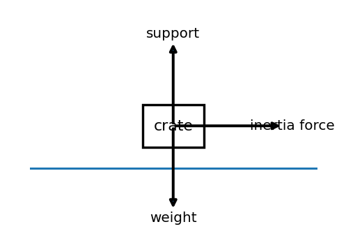
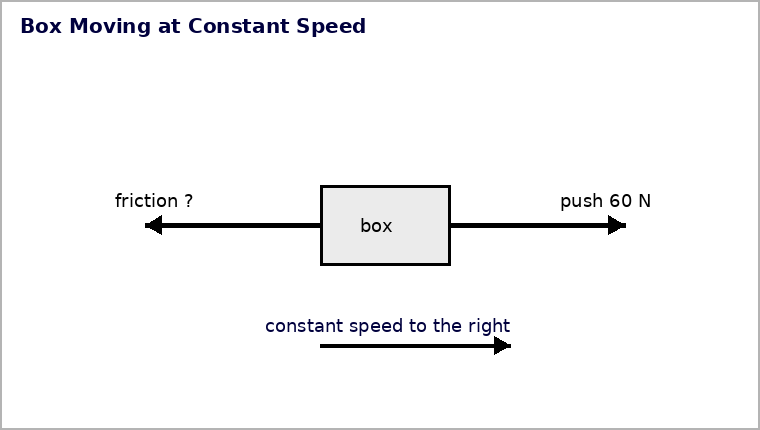

Modeling Forces in the Real World
Core idea: A useful force model starts with one chosen system, includes only real interactions acting on it, and must agree with the object’s observed motion.
You will inventory forces, reject motion-as-force errors, calculate net force, and defend the model that best fits the evidence.
Learning Target
Students will create and critique force models for real-world situations involving inertia, support force, net force, and equilibrium.
I can statements
- I can draw a force diagram for an object in a real-world situation.
- I can decide whether the forces are balanced or unbalanced.
- I can explain how the net force affects the object’s motion and critique an incorrect force explanation and revise it using physics vocabulary.
Vocabulary Preview
Skim the terms first. In the blank space, jot a word, example, picture, or question you already connect to each term. Definitions come later.
| Term | Before the reading: my connection / question |
|---|---|
| force model | |
| system | |
| interaction | |
| net force | |
| equilibrium | |
| evidence |
What's To Come
This is a long-range preview for this section. Do not solve it yet. Circle anything familiar, underline symbols, labels, conditions, data, or features that seem important, and write short notes about what you think may matter later.
A student sketches a force model for a crate sliding straight across a level floor and adds a forward arrow labeled "inertia force." The student says the arrow is needed because the crate is moving.

Write two questions you would ask before accepting the model. Do not correct the model yet.
Content: Read, Represent, Annotate, Apply
Directions
Read in short chunks. Annotate the prose and representations together. Mark evidence, conditions, important quantities, labels, patterns, and questions.
Reading 1: Choose One System Before Drawing Force Arrows
A force model is a representation of the forces acting on a chosen system. In many problems the system is one object: the book, cart, phone, sign, or bag you are analyzing. Naming the system first prevents a common error — mixing forces that act on different objects in the same diagram.
Next, inventory each interaction. Ask what other objects touch, pull, support, or gravitationally attract the system. Each force arrow should correspond to one of those interactions.

Stop and Discuss
- If the grocery bag is the system, which forces belong on the bag’s diagram and which forces would belong on another object’s diagram?
- Why does naming the system before drawing arrows reduce modeling mistakes?
Example 1: Choose the System and Inventory Forces
Choose the system to be a grocery bag resting on a counter. List the forces that act on the bag itself.
You Try It 1: List Only Forces on the Chosen Object
For a phone resting on a shelf, list only forces that act on the phone.
Reading 2: Every Force Arrow Must Come from an Interaction
A force arrow is not a label for what the object is doing. Motion, speed, inertia, and “wanting to keep going” are not interaction forces. Before accepting an arrow, ask: What object exerts this force on the system?

If a model includes a forward force only because an object is moving, the model has confused motion with force. If a real forward interaction exists — such as a push, tension, or thrust — name it. If no interaction can be identified, do not invent an arrow.
Stop and Discuss
- What question can you ask to test whether a proposed force arrow represents a real interaction?
- If a cart moves at constant velocity, what should you compare before deciding whether a forward force arrow belongs?
Example 2: Reject Motion as a Force
A student draws weight, support force, and "motion force" on a cart rolling at constant velocity. Critique the extra arrow.
You Try It 2: Demand an Interaction for Every Force Arrow
A skateboard rolls straight at steady velocity after a rider steps off. What question should you ask before drawing a forward force arrow?
Reading 3: Make the Force Model Agree with the Motion Evidence
After listing the forces, calculate or reason about the net force. Then compare that result with the motion. Zero net force is consistent with equilibrium: rest or constant straight-line velocity. A nonzero net force means the velocity changes in the net-force direction.

The final step is to use evidence to critique the model. A model that predicts changing velocity cannot match an observation of constant straight-line velocity. Revise the arrows, labels, or magnitudes until the interactions, vector sum, and motion description tell one consistent story.
Stop and Discuss
- Use the constant-speed box figure: what must be true about the leftward friction force if the velocity is truly constant?
- What three checks should you make before defending a force model as physically consistent?
Example 3: Connect Net Force to Changing Motion
A crate has 55 N right and 25 N left horizontally, with balanced vertical forces. Find the horizontal net force and predict how the motion changes.
You Try It 3: Predict Motion from an Unbalanced Model
A cart has 18 N left and 43 N right. Its vertical forces balance. Determine the net force and state what the model predicts.
Example 4: Compare Force Models Against Motion Evidence
Two force models are proposed for a book at rest: Model A shows equal support and weight; Model B shows only weight. Which is better supported by the motion evidence?
You Try It 4: Defend a Balanced Force Model
A hanging sign is motionless. One model shows only downward weight; another adds upward tension of equal magnitude. Defend the better model.
Vocabulary Definitions
| Term | Meaning in this section |
|---|---|
| force model | A representation showing the forces that act on a chosen system. |
| system | The object or set of objects selected for analysis. |
| interaction | A physical relationship between objects that can produce a force on the system. |
| net force | The vector sum of all forces acting on the chosen system. |
| equilibrium | The zero-net-force condition associated with unchanged velocity. |
| evidence | Observations, measurements, or representation features used to evaluate a model or claim. |
Summary
- Choose the system before drawing forces.
- Every force arrow must represent a real interaction acting on that system.
- Motion and inertia are not force arrows.
- Calculate or reason about net force, then compare it with the observed motion.
- A strong force model makes the interactions, vector sum, and motion evidence agree.
Common Mistakes
| Mistake | Why it is tempting | Check instead |
|---|---|---|
| Including a force that acts on a different object. | The interaction is real, but the diagram’s system has been forgotten. | State “system = ___” before listing forces. |
| Drawing a “motion force.” | The object is moving, so a forward arrow feels natural. | Name the object exerting each force; motion itself is not an interaction. |
| Ignoring a support or tension force. | Gravity is often easier to notice. | Inventory every contact and long-range interaction acting on the system. |
| Accepting a diagram that conflicts with the motion. | The arrows may look neat and complete. | Compare the net force prediction with whether velocity is actually changing. |